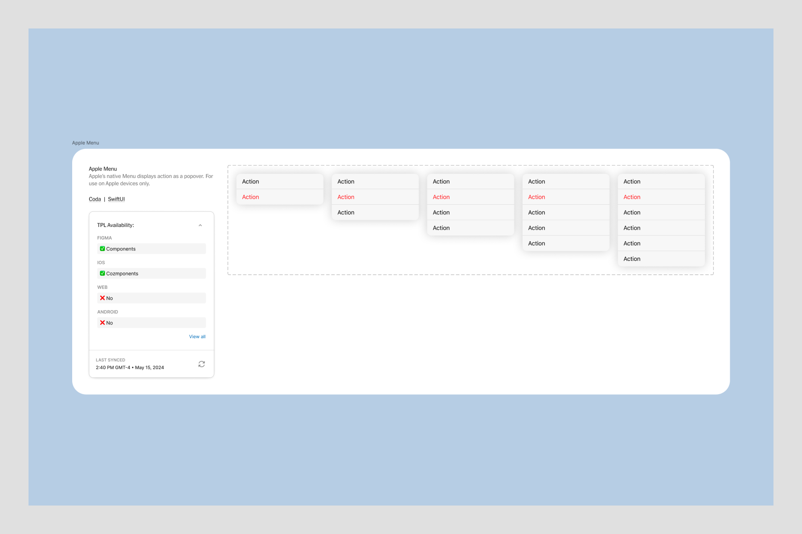

Swift Tales 2
July 2024 — I’ll talk about the first iOS component we kinda shipped in TPL: a popover menu we called “context menu”. (Swifties, I know what you're thinking. Read to the end.)
The TPL team was me, Joseph Kohlmann, Sergio Cuevas, Riley Sykes, Jaclyn Saik, Mallaigh Ashton, Norel Hassan, and Dan Mall.
Team and timeline
I led design and code prototyping. Joseph Kohlmann led engineering. Sergio Cuevas contributed engineering. We completed this work in 1.5 months.
Punk
When Dan Mall started working with the team, he encouraged the designers to find ways to work as close to engineering as possible.
My style of eng collaboration had been punk—sneaking around job titles to use my coding knowledge to form cross-discipline friendships and make cool stuff happen.
But now, without the expectation of staying in my lane, in what new ways could I be punk? Maybe if I wanted to get close to code, could I set aside Figma altogether?
Collaboration
I needed Joe and Sergio's help from the get-go. This is the main stuff they helped me learn:
- Xcode: Set up a simple preview environment, connect to the iOS-TPL repository, get rid of errors
- GitHub: Get auth tokens, connect to the NYT repository, commit, fetch, pull, push
- Tower: Save myself from Terminal
- SwiftUI basics: How to use our iOS-TPL tokens and who at NYT to ask for advice
- Jetpack Compose: While Android is not a supported library yet, I wanted to at least picture how everything might come together one day
Dan calls this way of collaborating “hot potato”, where 2-3 independent contributors pass the work between each other synchronously. This was a great way to vet ideas and observe engineering life. Engineers are TPL customers at the end of the day.
But not my only customers. I also serve the Brand team. Brand must sign off on all of my work, which I honestly love. Not just because they’re awesome people, but also because designers and engineers alike want our stuff to look and feel excellent across the Times.
The way I see it, my role as a design/eng hybrid is to convince Brand and Engineering that they want the same things. And my role as an accessibility subject matter expert is to build something that works for everyone.
In the case of Context Menu, however, little compromise could be had.
Prototypes
Maybe I’m a tad clairvoyant. I knew Brand would prefer a fully custom popover menu. (I did too.)
But through prototyping in Xcode, I learned that anything that requires constantly updated positioning based is troublesome in SwiftUI. Unlike web, SwiftUI has stricter parent/child relationship rules that make it messy to program Context Menu to act as expected. I was in a bind.

An example of z index on the web (left) and in SwiftUI (right) with the same parent/child relationships. SwiftUI does not override the parent.
Joe felt strongly that building something custom wasn’t feasible within the known future. He also pointed out the future cost of maintaining something fragile and complicated especially when SwiftUI already provides a very similar component, Menu. (And it’s so easy to use).
Through this experience, I helped develop a philosophy the TPL team now tries to stick to:
- Dig into the SwiftUI docs for a native solution (and create a prototype)
- Test how much can be customized and review with the Brand team (and create a prototype)
- If that fails, quickly gauge how difficult it is to go fully custom and review it with Brand and iOS engineers (and create a prototype)
- Either agree on visual design compromises and lean toward SwiftUI conventions or communicate the time and cost of going fully custom (and create many more prototypes)
I love prototypes.
I created an example of a SwiftUI Menu and discovered that the only detail we could adjust were optional icons next to the text (which, after reviewing with Brand, we hoped to avoid using anyway).
Next, I attempted a fully custom version which required 340 lines of code (see the prototype in GitHub). Showing Brand the sheer magnitude of the time and effort to go fully custom was enough to convince them to stick to Apple’s native Menu.
Opting to use SwiftUI's Menu component was now an easy choice. Reviewing our decision with iOS engineers was very reassuring. I think they were relieved by how creatively and harmoniously we all agreed that sticking to Apple convention was the right choice.
Summary
I saved the team at least 3 months of time and effort by gaining agreement from Brand, Product Design, and Engineering to use Apple's native Menu. I built 7 prototypes to thoroughly vet several directions, implementing GeometryReader and Alignment Guides. These became useful tools for future components.
Yes. I did use Figma to sketch some ideas. I’m a punk, not a masochist. Plus I needed to offer a nice component for designers.
In the next installment, we’ll dive into another iOS component.